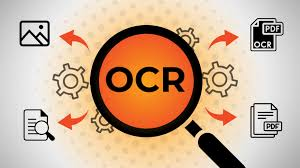

Site de recettes de cuisine
Un site ou je partage mes recettes de cuisine, fait avec HTML/CSS/JS. Je travaille sur ce site pour préserver les connaissances que j'ai acquises lors de mon année de terminale STI2D.
Voir le site →Étudiant en Robotique & Intelligence Artificielle
Je suis actuellement étudiant en première année à l'IUT de Béziers. Curieux et motivé, je suis constamment à la recherche de nouveaux défis.
Licence Professionnelle Robotique & Intelligence Artificielle - IUT Béziers
Baccalauréat Sciences et Technologies de l'Industrie et du Développement Durable - Lycée Polyvalent Jean Moulin
Un site ou je partage mes recettes de cuisine, fait avec HTML/CSS/JS. Je travaille sur ce site pour préserver les connaissances que j'ai acquises lors de mon année de terminale STI2D.
Voir le site →Création d'un script en POO d'un casino afin d'améliorer cet aspect de la programmation en python.
Projet toujours en cours, je prévois de rajouter des jeux et une IHM avec la librairie tkinter.

En reprenant le travail réalisé lors de la SAE2.4, je souhaite retravailler les aspects abordés lors de ce projet pour approfondir mes connaissance et mes compétences.